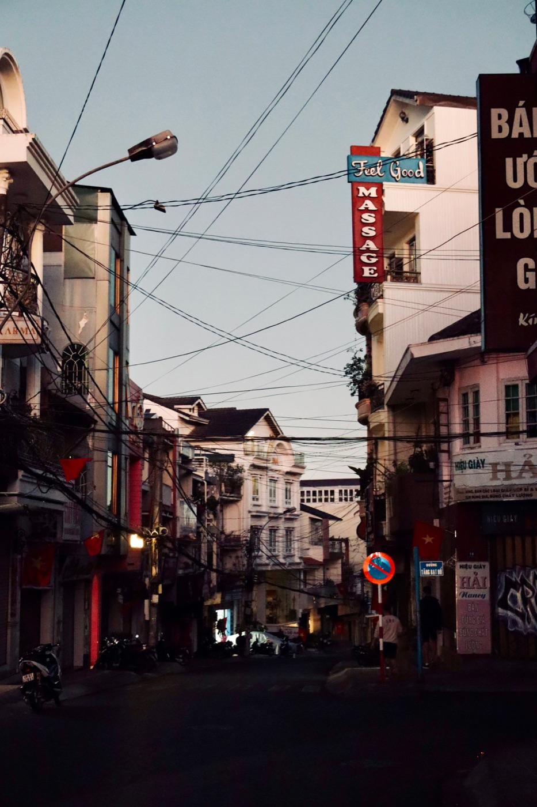

베트남에서 오토바이로 교차로 지나는 법

교차로는 직선 구간보다 더 많은 주의가 필요합니다: 차와 오토바이가 여러 방향에서 동시에 나타나고 궤적이 겹칠 수 있습니다. 핵심은 미리 속도를 줄이고, 의도를 보여주고, 신호와 현지 규칙을 지키며 예측 가능하게 움직이는 것입니다.
준비는 미리 시작된다
교차로 몇 초 전에 스로틀을 풀고 신호등, 차선, 보행자, 뒤 차량을 확인하세요. 방향지시등은 동작 중이 아니라 동작 전에 켜세요. 차선을 정하고 마지막 순간에 대각선으로 가로지르지 마세요. 이미 회전 지점을 지나쳤다면 계속 가서 경로를 다시 잡는 것이 안전합니다.
넓게 보기
한 대의 차에 시선을 고정하지 마세요. 마주 오는 차량, 옆길, 미러, 교차로를 빠져나갈 공간을 확인하세요. 내 궤적을 가로질러 회전할 수 있는 차와 사각지대에서 나란히 달리는 오토바이를 특히 주의하세요.
우회전
회전 진입 전에 속도를 줄이고 미러와 사각지대를 확인하세요. 보행자를 먼저 보내고 연석에 바짝 붙지 마세요: 모래, 물, 주차된 오토바이가 있을 수 있습니다. 회전 중에는 스로틀을 일정하게 유지하고 핸들을 꺾은 채 앞 브레이크를 세게 잡지 마세요.
좌회전
허용된 위치를 미리 잡고 의도를 보여주세요. 방향지시등을 봤다고 마주 오는 운전자가 꼭 양보할 거라 믿지 마세요. 궤적이 정말 비었을 때 시작하세요. 복잡하고 넓은 교차로에서는 허용되는 곳이라면 초보자에게 두 단계로 회전하는 것이 더 안전할 때도 있습니다.
로터리
진입 전 속도를 줄이고 우선권 표지를 보세요: 방식이 다를 수 있습니다. 작은 틈에 억지로 끼어들지 마세요. 로터리 안에서는 급한 차선 변경 없이 궤적을 유지하고, 나갈 때 방향지시등을 켜고 미러와 옆 공간을 확인하세요.
위험한 습관
- “지나가려고” 노란불에 가속하기;
- 이유 없이 빈 궤적 한가운데서 멈추기;
- 회전 중 버스나 트럭 옆에 붙어 달리기;
- 신호등만 보고 보행자를 못 보기;
- 직접 도로를 확인하지 않고 다른 오토바이의 동작을 따라 하기.
짧은 결론
교차로 전에는 속도를 줄이고, 분명한 위치를 잡고, 남의 실수에 대비할 여유를 두세요. 먼저 베트남 교통의 전반적인 논리를 익히고, 자신 있게 멈추려면 올바른 제동법을 읽어보세요.